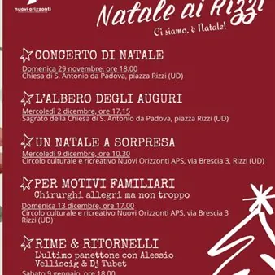

da dom 29 nov a sab 9 gen
La magia del Natale - Natale ai Rizzi
Ci sono appuntamenti che, anno dopo anno, diventano parte della vita di un quartiere. Ai Rizzi uno di questi è l'accensione dell'Albero degli auguri: un momento atteso, che ogni anno riunisce grandi e piccoli, associazioni e realtà del quartiere per dare insieme il via alle…
 Indicazioni
Indicazioni
- Costi e prenotazioni
- Costo non indicato · Prenotazione non indicata
- Programma
- Programma da verificare. Apri la fonte ufficiale per orari e possibili aggiornamenti.
- In caso di maltempo
- Nessuna indicazione specifica pubblicata.
- Note
- Acquisito automaticamente dalla fonte.
L’EVENTO
Descrizione completa
Ci sono appuntamenti che, anno dopo anno, diventano parte della vita di un quartiere.
Ai Rizzi uno di questi è l'accensione dell'Albero degli auguri: un momento atteso, che ogni anno riunisce grandi e piccoli, associazioni e realtà del quartiere per dare insieme il via alle feste.
Anche quest'anno il Circolo Nuovi Orizzonti rinnova questo appuntamento, giunto alla sua quinta edizione, e lo accompagna con un programma di iniziative che porta musica, teatro e occasioni di incontro nei luoghi del quartiere.
Dal 29 novembre al 9 gennaio ci aspettano cinque appuntamenti, per vivere insieme il Natale attraverso linguaggi e proposte diverse, dai più piccoli agli adulti.
Domenica 29 novembre ore 18:00 Chiesa di S. Antonio da Padova, piazza Rizzi
Concerto di Natale
L'Orchestra a Plettro “Città di Codroipo” ci accompagna in un viaggio musicale tra brani classici, melodie della tradizione natalizia, musica celtica e ritmi del mondo.
Mercoledì 2 dicembre ore 17:45 Sagrato Chiesa di S. Antonio da Padova, piazza Rizzi
L'Albero degli auguri
La festa per l'accensione dell'albero, decorato con i lavori dei bambini delle scuole del quartiere sul tema «Il futuro che vorrei». Con gli zampognari dell’associazione Furclap e una merenda offerta dal Circolo e dalla Sezione ANA dei Rizzi.
Mercoledì 9 dicembre ore 10:30 Circolo Nuovi Orizzonti via Brescia 3
Un Natale a sorpresa
Michele Zamparini del Teatro Positivo porta in scena una fiaba natalizia per i bambini della scuola primaria E. Fruch e della scuola dell'infanzia G. Centazzo.
Domenica 13 dicembre ore 17:00 Circolo Nuovi Orizzonti via Brescia 3
Per motivi familiari – Chirurghi allegri ma non troppo
La compagnia teatrale Ndescenze – Gruppo Stabile presenta una commedia brillante tra equivoci, bugie e situazioni imprevedibili.
Sabato 9 gennaio ore 20:30 Circolo Nuovi Orizzonti via Brescia 3
Rime & Ritornelli – L'ultimo panettone
Alessio Velliscig e Dj Tubet: rap, cantautorato, musica, freestyle e un'ultima festa per salutare insieme le festività. Con scambio dei regali brutti e momento conviviale!
Tutti gli appuntamenti sono gratuiti
IL PROGRAMMA
Programma e orari
Appuntamenti raccolti dalle fonti elencate. Dove manca un orario, non è ancora disponibile in questa scheda.
Programma pubblicato
- Dal 2026-11-29 al 2027-01-09
INFORMAZIONI UTILI
Prima di partire
- Controllare la fonte prima di partire.
ORGANIZZAZIONE